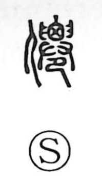

仙

Kun: | On: sen
immortal ・ hermit ・ mountain ascetic ・ transcendent
Explanation
仙 is the later form of 僊, which combines 人 with 䙴 as its phonetic. 䙴 shows a dead person being lifted and moved: the upper part is the head, the bent lower figure is the body, and 廾 supplies the two carrying hands.
The dead were first placed in a boarded mortuary shelter. After the body had weathered, the remains were moved for burial. 僊 names the person within this passage beyond ordinary life.
The simpler 仙 replaces the right side with 山 as its phonetic and probably also evokes residence in the mountains. The word comes to name a recluse, an ascetic cultivating the Way, or a transcendent. The mountain dweller and the older mortuary figure share the idea of passing beyond the ordinary human condition.